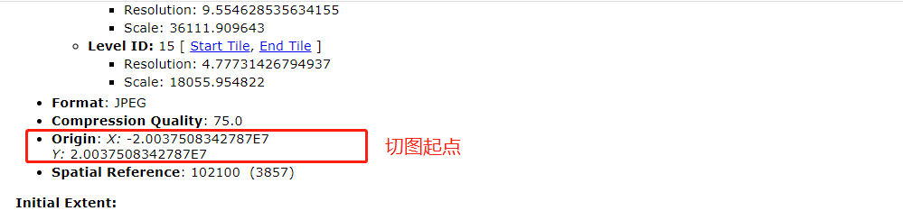
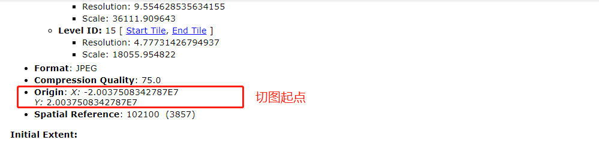

leaflet加载自定义投影瓦片(对接PGIS)
leaflet自定义了4种投影，分别是:
其中leaflet默认使用第一种方式来加载地图，切图比例尺也都遵循Googlemap的，因此如何加载利用arcgis server自定义投影的瓦片呢？以arcgis的瓦片服务（https://services.arcgisonline.com/ArcGIS/rest/services/USA_Topo_Maps/MapServer）为例，下面引用另一个第三方插件proj4leaflet，该插件能自定义任意投影的地图
1.安装proj4leaflet依赖
npm install proj4leaflet -S
2.引入proj4leaflet依赖，自定义CRS参数
import 'proj4leaflet'
const CRS = new L.Proj.CRS('EPSG:3857', '+proj=merc +a=6378137 +b=6378137 +lat_ts=0.0 +lon_0=0.0 +x_0=0.0 +y_0=0 +k=1.0 +units=m +nadgrids=@null +wktext +no_defs', {
resolutions: [
156543.03392800014,
78271.51696399994,
39135.75848200009,
19567.87924099992,
9783.93962049996,
4891.96981024998,
2445.98490512499,
1222.992452562495,
611.4962262813797,
305.74811314055756,
152.87405657041106,
76.43702828507324,
38.21851414253662,
19.10925707126831,
9.554628535634155,
4.77731426794937,
],
origin: [-2.0037508342787E7, 2.0037508342787E7]
});
里面传入了四个参数，分别代表：投影方式（EPSG），proj4表达式，resolution分辨率，origin切图起点。
其中投影方式，resolution分辨率，origin切图起点可以访问瓦片服务地址找到对应的参数，如图：
 

proj4表达式需要访问 http://epsg.io/，查询对应的proj4表达式。如图：
3.初始化地图，引用配置好的CRS，完整代码如下：
import L from 'leaflet';
import 'leaflet/dist/leaflet.css';
import 'proj4leaflet';
const CRS = new L.Proj.CRS('EPSG:3857', '+proj=merc +a=6378137 +b=6378137 +lat_ts=0.0 +lon_0=0.0 +x_0=0.0 +y_0=0 +k=1.0 +units=m +nadgrids=@null +wktext +no_defs', {
resolutions: [
156543.03392800014,
78271.51696399994,
39135.75848200009,
19567.87924099992,
9783.93962049996,
4891.96981024998,
2445.98490512499,
1222.992452562495,
611.4962262813797,
305.74811314055756,
152.87405657041106,
76.43702828507324,
38.21851414253662,
19.10925707126831,
9.554628535634155,
4.77731426794937,
],
origin: [-2.0037508342787E7, 2.0037508342787E7]
});
var map = L.map('map',{crs: CRS}).setView([30.70, -81.47], 9);
L.tileLayer('https://services.arcgisonline.com/ArcGIS/rest/services/USA_Topo_Maps/MapServer/tile/{z}/{y}/{x}', {
detectRetina: false,
minZoom: 3,
maxZoom: 16
}).addTo(map);